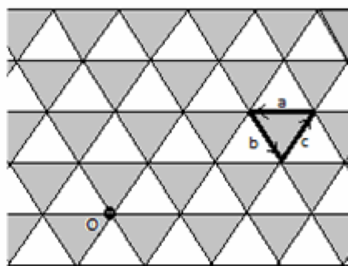

a$)$ There is an unlimited set of cards with the words "abc", "bca", "cab" written. Of these, the word written is determined according to this rule. For the initial word, any card can be selected, and then on each turn to the existing word, you can either add on a card to the left or to the right, or cut the word anywhere $($between the letters$)$ and put a card there. Is it possible to make a palindrome with this method?
b$)$ There is an unlimited set of red cards with the words "abc", "bca", "cab" and blue cards with the words "cba", "acb", "bac". Using them, according to the same rules, a palindrome was made. Is it true that the same number of red and blue cards were used?
We will consider all possible pairs of letters which go into the word. We call the pairs a ... b, b ... c and c ... a good pairs a ... c, c ... b and b ... a - bad.
a$)$ Consider how the number of pairs changes when one card is added. Inside this card there are two good and one bad pair. Since three different letters are inserted "into one place," with each of the already existing letters they form three new pairs: neutral, good and bad. Hence it is clear that the number of good pairs is always greater than the number of bad pairs. And in the palindrome, they should be equally divided because of the symmetry of the word.
b$)$ As shown in a$)$, each red card increases the difference between the number of good and bad pairs by one unit, and each blue - reduces the number by one. Since in the palindrome the number of good pairs is equal to the number of bad pairs, the number of red cards is equal to the number of blue ones.
We consider a triangular lattice of equal triangles on the plane, we paint it in a staggered order, and select the starting point O on it. Let's compare the letters a, b, c to unit vectors in three directions $($see the figure$)$ and consider the word as a description of a path, starting at point O. Any of the triples abc, bca, cab adds to the path a trip around a dark triangle, and from the triples acb, cba, bac - a trip around a light one. The path is still closed, although some edges may be passed several times. If the closed path is a palindrome, then the first and last edges coincide in direction, but one starts at O, and the other ends at O. Hence, the corresponding segments are centrally symmetric with respect to O. In the same way, the second and penultimate segments of the path are centrally symmetric, and so on. So the entire path turns out to be centrally symmetric.

Let us calculate the oriented area covered by a closed broken line. We choose O as the origin. Then if AB and CD are centrally symmetric segments, and the vectors AB and CD are co-directional, then the sum of the oriented areas OAB and OCD is 0. Hence, the total oriented area is equal to 0. Let the area of each triangle of the lattice be equal to 1. Then the triangles of the first type add up to 1, and the second type gives the sum -1. Hence, a$)$ in the palindrome there were cards of both types used, and b$)$ the cards of both types were used equally.
a$)$ It is impossible; b$)$ it is true.
1. In solution 1 in a$)$, only pairs of neighboring letters can be considered.
2. 4 + 6 points.